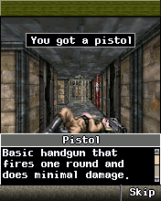
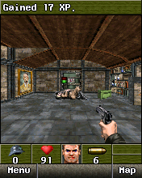

We started Wolfenstein with Contra’s execution foundation and services from Genesis and DOOM. That got us a long way, until this game asked those pieces to do something the earlier ones hadn’t.WR01
Two clocks needed two places to live.
The original game and its sound path registered separate callbacks at 50 and 100 milliseconds. A host that retained only one timer slot could replace one with the other. Preserving callback and data identity let both registrations exist on the same execution worker.WR02
The ISound startup and configuration notification had its own contract too: its original callback needed the right command and status fields. The separate media-playback path also needed stale callbacks rejected after their player had been replaced.WR06WR07

Wolfenstein RPG’s original first-person corridor with You got a pistol dialogue.176×220 historical host capture after the tested suspend/resume sequence; not a phone screenshot.
Open the image for the full original view.
WR90The first shot.
We reproduced the phone’s first-combat freeze on the host by firing the first pistol shot. The game queried a bitmap for an ITransform interface. Our host returned the bitmap’s own vtable, so the rotated sprite blit called a method through the wrong contract.WR10
A typed transform view and the measured signed 8.8 quarter-rotation supplied the operation the game expected. In the retained repaired run, the first guard’s health falls 40 → 24 → 9 → 0, the player takes damage, ammunition decreases, and movement continues after the fight. The test finally went through the event that the earlier corridor had not covered.WR11WR14

After the typed transform repair, the original first guard is defeated and the game awards17XP. The retained desktop original-runtime frame precedes the later extra fire input and post-combat movement checks.
Open the image for the full original view.
WR91A normal exit looked like another failure.
A separate earlier stop came from CLR asking the shell to close the applet. The host had not implemented that normal exit path. It was not another renderer failure just because it ended the session.WR08
In the later 0.1.4 work, we shortened the controls while keeping the repaired engine. Borrowing the family foundation had saved us startup work. Getting through the first shot and the normal exit still meant learning what Wolfenstein itself expected.WR13WR14
About these records
The corridor image is an inspected original-runtime host frame; similarly named intro images were not used as proof of gameplay. The phone first-combat report, host reproduction and repaired combat checks retain their recorded scopes. The later compact control shell is not a new phone verdict. The first-shot and exit stops are distinct incidents, not one invented crash sequence.
The receipts
Selected report lines, investigation notes and recorded feedback. Each receipt keeps its original source and scope.
WR01 / Contra with Genesis and Doom services becomes Wolfenstein’s foundationCheckpoint investigation notes
Source: 14-Wolfenstein_RPG_Bridge_v0.1.0_PRIVATE_CHECKPOINT.zip / Wolfenstein_RPG_Bridge_v0.1.0_PRIVATE/TECHNICAL_HANDOFF.txt · selected lines 5–9
Original Wolfenstein RPG 7.1.32 en.mtv3cb (Motorola V3c English), CLSID 0x01081949, native 176x220 canvas. Original MOD/BAR/MIF/config.txt bytes are unchanged; the Android-free ARM/Thumb interpreter executes the original engine. Foundation: Contra 4 v0.1.1 bridge with Resident Evil Genesis and Doom RPG compatibility services. Native timers are independent registrations keyed callback/data, with captured registration deadlines. Earliest due callback is removed before execution; one Android worker callback pumps only due guest timers. This preserves the separate 50 ms game-loop and 100 ms sound timers which a single pending slot would overwrite. Added original startup requirements: retained bitmap QueryInterface 0x01001029 alias; GetAppletInstance during constructor via native output pointer; SYS_B+0x16C allocation annotation preserving allocated pointer; SYS_B+0x140 ARM va_list indirection; queued shell PostEvent returning native boolean success; ISound registration/config/volume notification and guest-compatible vibration calls. Rendering retains the tested original IDIB/IGraphics compatibility and coherent byte-range bitmap caches. No guest executable patches are applied.
WR02 / One timer slot lost the sound callbackCheckpoint investigation notes
Source: 14-Wolfenstein_RPG_Bridge_v0.1.0_PRIVATE_CHECKPOINT.zip / Wolfenstein_RPG_Bridge_v0.1.0_PRIVATE/evidence/timer_queue/verification.txt · selected lines 3–11
Implemented independent registrations keyed by callback/data, each retaining its original deadline. Replacement only touches an identical pair. Cancellation handles null callback and matching data. Earliest registration is exposed to Android scheduling; real pumping checks its due time, and removes it before entering the guest. Virtual clock conversion shifts all registrations and pumping advances to the earliest deadline. NativeTimerRegression: PASS. Real ARM callback stubs independently wrote game marker 1 and sound marker 2 in deadline order. Verified no early real-time callbacks, all deadline conversion, callback/data identity, replacement ordering, cancellation of multiple callbacks sharing data, empty-queue reporting. WolfProbe sequence: tick 80, tap 5 (sound YES), tick 100. Session remains live; 181 timer callbacks executed; 184 display updates; 176x220 city/cinematic frame, 36080 nonblack pixels; no boot/live failure. Original guest SoundPlayer reached CreateInstance, SetData 29420 bytes, and Play 29420 bytes (trace.log lines 1371–1374). Previously the single lastTimer slot lost this callback. Playback completion still requires Android audio notification; desktop probe does not synthesize it.
WR06 / Original sound callback requires command and status valuesCheckpoint investigation notes
Source: 14-Wolfenstein_RPG_Bridge_v0.1.0_PRIVATE_CHECKPOINT.zip / Wolfenstein_RPG_Bridge_v0.1.0_PRIVATE/evidence/interface-findings.txt · selected lines 1–11
Wolfenstein RPG BREW native interface findings Evidence: original supplied wolfensteinrpg.mod, disassembled as little-endian ARM using Capstone 5.0.7. ISound class 0x0100100B (created at module offset0xDF4; stored applet+0x6C) - off0x08: register notify(cb,user). Init at0x4E17C supplies cb00102F50 and sound-controller pointer. - off0x0C: accept/copy five-byte sound-info; original constructs bytes1,4,0,0,0 at controller+8. Init0x4E19C. - off0x14: no-argument query, presumed GetVolume from callback use. Init0x4E1B8. Schedule callback(user,1,1,volumeDataPtr). volumeDataPtr may point uint16(100). Original callback00102F50 does NOT read volumeDataPtr. It requires command1 and status1, reads applet=[user], checks applet+0x94 manner mode, writes user+0x18=100 if0 else0. Callback semantics are native evidence; method name is inferred.
WR07 / Six emitted audio clips and stale callback rejectionHistorical host audio regression output
Source: 14-Wolfenstein_RPG_Bridge_v0.1.0_PRIVATE_CHECKPOINT.zip / Wolfenstein_RPG_Bridge_v0.1.0_PRIVATE/evidence/audio/result.txt · selected lines 1
PASS guest QCP/PCM hash verification: plays=6 unique_hashes=6 starts=6 completions=1 stops=5 replays=4 stale_rejected=4 start_callback_steps=72 completion_callback_steps=18
WR90 / Historical image / Wolfenstein RPG corridor and pistol messageHistorical host capture
Source: Wolfenstein_RPG_Bridge_v0.1.0_PRIVATE/evidence/acceptance/020_tick_20.png
Original game pixels retained from the stated historical host check. No physical-phone capture is implied.
Unchanged historical image. Source member: Wolfenstein_RPG_Bridge_v0.1.0_PRIVATE/evidence/acceptance/020_tick_20.png SHA-256: b04179295d28fbd12a58decae53c175672af227ca15342b02bf5976c65b0b5f9 Wolfenstein RPG’s original first-person corridor with You got a pistol dialogue.176×220 historical host capture after the tested suspend/resume sequence; not a phone screenshot. Scope: Historical desktop original-runtime framebuffer; not phone output. Visually inspected, game only, no personal UI.
WR10 / A bitmap is not its transform interfaceCheckpoint investigation notes
Source: Wolfenstein_RPG_Bridge_v0.1.4_PRIVATE_CHECKPOINT.zip / Wolfenstein_RPG_Bridge_v0.1.4_PRIVATE/evidence/baseline-v0.1.2/TECHNICAL_HANDOFF.txt · selected lines 7–9
The supplied v0.1.1 device report records an unsupported interface cls=0x7E000001, offset 0x10, during a native timer callback. The earlier bridge returned the same bitmap object for QueryInterface(0x01001029), although that IID is ITransform. The later native transform call therefore reached an IBitmap vtable with the wrong method layout. v0.1.2 supplies a separately typed ITransform view retaining the original backing bitmap. Its native signed 8.8 matrix blit performs center rotation and mirroring with pixel-center sampling, source/destination clipping and transparent compositing. It keeps reference counts and backing DIB bytes coherent, including overlapping source/destination use. The original executable and game state are not patched. The supplied v0.1.1 video starts after the combat freeze. It shows the stopped frame but does not capture the initial trigger. The short original first-guard host route reproduces the same fault with matching object/registers and LR00117BC0. The native matrix is [0,-256,256,0], a transparent 16x16 quarter rotation at destination (-1,17). The release runtime passes this route and further combat: original player HP100->97->94->91, pistol ammo10->6, guard HP40->24->9->0 and corpse flag, then movement Y1376->1312 with continuing timers. Evidence includes the pinned v0.1.1 comparison and current runtime hash. VERIFICATION.txt records the tested scope. No physical v0.1.2 run has been supplied.
WR11 / The first pistol shot reproduced the phone freezeCheckpoint investigation notes
Source: Wolfenstein_RPG_Bridge_v0.1.4_PRIVATE_CHECKPOINT.zip / Wolfenstein_RPG_Bridge_v0.1.4_PRIVATE/evidence/first-combat/comparison.txt · selected lines 6–28
The same original phone-input route reaches the first guard on Tower level 1: spawn (1120,1632,angle0); 2,2,4,2; native R-soft dismisses the door tutorial; 5 opens the door; 2,2; wait 1000 ms for the original guard cinematic's Skip; R-soft Skip; 5 attacks; 2 approaches; 5,5,5; 2 continues past the defeated guard. The test uses natural PCM-duration START/COMPLETE callbacks and only reads guest memory. Original configfilename preferences are reused when available; no world or player save is imported and no guest state is altered by the host test. Before: first pistol shot fails in the native timer callback at cls=7E000001 off=0x10 r0=01001CC0 r1=FFFFFFFF r2=00000011 r3=01209118 LR=00117BC0. This exactly matches the device report's interface/offset/registers. Actual matrix at01015840: signed 8.8 [0,-256,256,0], source16x16, destination(-1,17), composite0. At failure HP97, ammo9, guardHP24. After: native playerHP100 ->97 ->94 ->91; ammo10 ->9 ->8 ->7 ->6; original guardHP40 ->24 ->9 ->0 and corpseflag0172005A. Three shots defeat the guard; another native fire input continues successfully. The original view moves from(1248,1376) to(1248,1312), original free-play state3/level1 persists, and native timers continue to999. All checks pass. Four compact after screenshots show the living guard, counterattack, corpse/XP, and movement past the corpse. The supplied phone recording begins after the runtime has already stopped; it cannot identify the original triggering input. The host reproduction does.
WR14 / Fresh combat checks and retained historical suitesCheckpoint investigation notes
Source: Wolfenstein_RPG_Bridge_v0.1.4_PRIVATE_CHECKPOINT.zip / Wolfenstein_RPG_Bridge_v0.1.4_PRIVATE/VERIFICATION.txt · selected lines 11–21
PASS: fresh NativeTransformRegression on the unchanged runtime: typed ITransform view/lifetime, native matrix ABI, all 8 rotations/mirrors, clipping, key/opaque compositing, scaling, RGB565 DIB cache coherence and unsupported singular matrix handling. Result: evidence/v014-NativeTransformRegression.log. PASS: fresh HostExitRegression: original STOP/Release, canceled timers, retained native save bytes, no injected game key and repeated cleanup/stale-input safety. Result: evidence/v014-HostExitRegression.log. PASS: fresh original-engine FirstCombatRegression: player HP 100 to 97 to 94 to 91; pistol ammo 10 to 6; guard HP 40 to 24 to 9 to 0 and corpse flag; post-combat Y 1376 to 1312; native timers continue to 999 and runtime stays live. Result: evidence/v014-FirstCombatRegression.log and evidence/v014-first-combat/. No synthetic gameplay or original executable patch is used. HISTORICAL BASELINE: the earlier full native acceptance/save/audio/cinematic/timer suite and 12-test shared UI Kit replay are retained as v0.1.3 evidence. They were not rerun in full for this layout-only release. Runtime and shared kit are byte-identical. The current five game-specific Android scenarios and the three native regressions above were freshly run for v0.1.4. VISUAL QA: evidence/v014-normal-layout.png and evidence/v014-keypad-layout.png show actual measured Android widgets rendered through their own onDraw methods with an original-engine combat capture used as a static renderer fixture. Both previews were inspected. They are host layout previews, not live phone screenshots. See evidence/V014_PREVIEW_SCOPE.txt. SCOPE: signed APK inspection, real original-engine host execution and Android framework checks. No physical Android device or emulator was connected. Actual phone update/cold launch, live Downloads export, audio output, touch/controller comfort, physical system/cutout insets, device heat/performance and full-game completion remain unverified for v0.1.4. Framework startup exercises the actual controls/kit in a test Activity; it is not packaged MainActivity running on a phone.
WR91 / Historical image / The first Wolfenstein guard defeated in the repaired host runHistorical host capture
Source: Wolfenstein_RPG_Bridge_v0.1.4_PRIVATE/evidence/first-combat/after/002_guard_defeated.png
Original game pixels retained from the stated historical host check. No physical-phone capture is implied.
Unchanged historical image. Source member: Wolfenstein_RPG_Bridge_v0.1.4_PRIVATE/evidence/first-combat/after/002_guard_defeated.png SHA-256: 415d86008ef3717492f2104915bdebfd0a19d82d89caca714e155d0333609cc1 After the typed transform repair, the original first guard is defeated and the game awards17XP. The retained desktop original-runtime frame precedes the later extra fire input and post-combat movement checks. Scope: Historical desktop original-runtime framebuffer; not phone output. Visually inspected, game only, no personal UI.
WR08 / The original Clear key had asked to close the gameCheckpoint investigation notes
Source: Wolfenstein_RPG_Bridge_v0.1.4_PRIVATE_CHECKPOINT.zip / Wolfenstein_RPG_Bridge_v0.1.4_PRIVATE/evidence/baseline-v0.1.2/TECHNICAL_HANDOFF.txt · selected lines 11
The supplied v0.1.0 device report stops at IShell+0x18. Original native callsites identify CloseApplet; the same failure was reproduced with CLR during the opening story. v0.1.1 handles the requested close at a safe native-call boundary, sends original EVT_APP_STOP and applet Release, cancels remaining timers/callbacks and stops Android audio. The result records nativeClosed separately from failure. Android displays Game closed / Tools -> Restart game and persists original files. It does not suppress an original exit or invent a skipped scene.
WR13 / A compact Doom-style layout keeps the fixed Wolf runtimeCheckpoint investigation notes
Source: Wolfenstein_RPG_Bridge_v0.1.4_PRIVATE_CHECKPOINT.zip / Wolfenstein_RPG_Bridge_v0.1.4_PRIVATE/README_FIRST.txt · selected lines 5–16, 18–20
This is the requested compact Doom-style gameplay layout using Wolfenstein's original inputs. The exact fixed v0.1.3 runtime, original game assets, audio, independent report exporter, native exit handling and physical-controller mappings are preserved. LEFT ACTION COLUMN: SIDE LEFT=1, SIDE RIGHT=3, MAP=#, MENU/BACK=0. CENTER: a continuous digital movement pad sends 2 forward, 8 back, 4/6 turn. Its WAIT center sends original 9. When sniping, 2/8 aim vertically and 4/6 aim horizontally. RIGHT ACTION COLUMN: prominent FIRE/OK=5; NEXT WEAPON=7; PREVIOUS WEAPON=* (the latter two also retain native sniper zoom behavior). NATIVE KEY ROW: L SOFT, PHONE OK (true original SELECT), R SOFT (SKIP/MORE), CLEAR (original CLR). ORIGINAL KEYPAD replaces only the central movement pad with the readable original 1–9,*,0,# cluster. Both side columns and the native key row stay in the same positions, including the separate Fire/OK action. D-PAD RETURN switches back in one tap. The same live aspect-correct game viewport remains attached, visible and unchanged when switching. The compact panel uses about 82dp less height than v0.1.3 at normal phone settings. Keys retain 48dp minimum hit regions and the movement pad remains square. Portrait/landscape use actual measured safe areas and group sizing. The opening before the title must be watched once; after that, 5 or SELECT can skip it. The separate prison cinematic after New Game uses R SOFT, # or 9 when Skip is offered. 5/SELECT remains action/confirm. WAIT uses exactly the native 9 input; no synthetic skip or conditional Fire remap exists. [... selected excerpt ...] Android Back exits through the preserved original STOP/Release cleanup and returns to Omni/caller. CLEAR retains the original game's Clear/CloseApplet behavior. SAVE REPORT still exports genuine .txt directly to Downloads/Wolfenstein RPG Bridge/ independently of the game worker, with honest snapshot age and export status. Fresh checks passed: signed APK/package/version/certificate, unchanged runtime/payloads/reporting, 5 Android framework UI scenarios, 4,212 layout cases, native ITransform/exit and first-guard combat. Physical-phone installation, control comfort, live Downloads export and audio output have not been tested here for v0.1.4. See VERIFICATION.txt for scope.